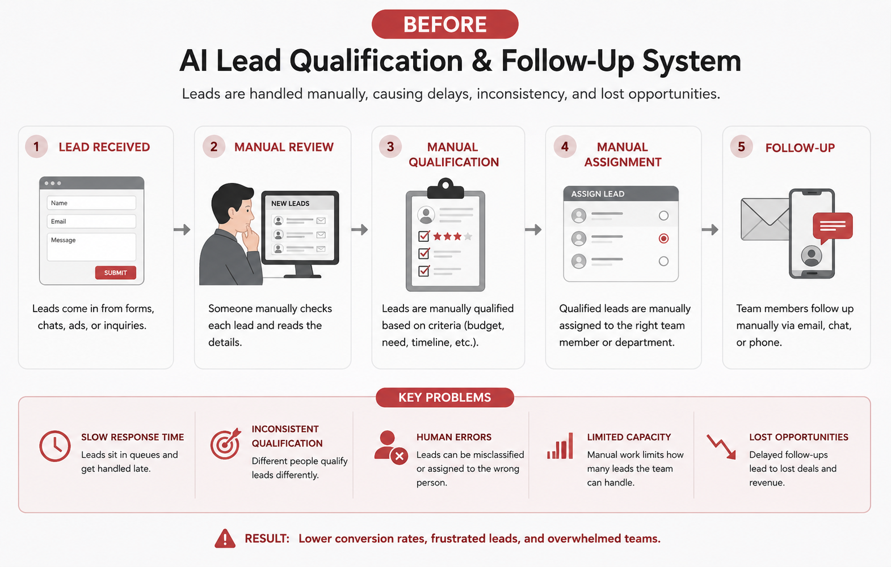

PROJECT 01
Sales Operations
AI Lead Qualification & Follow-Up System
A workflow designed to reduce repetitive lead screening and create a more consistent process for analyzing, qualifying, categorizing, routing, and following up with incoming leads.
Demo Project
BEFORE

→
AFTER

Problem
Manual lead review, qualification, assignment, and follow-up.
Solution
Automated analysis, scoring, categorization, routing,
notifications, and follow-up.
Designed to Improve
Response speed • Qualification consistency • Sales-team capacity
Built as a demonstration of my AI automation and business-process
improvement capabilities. Outcomes shown are intended design goals,
not claimed client results.